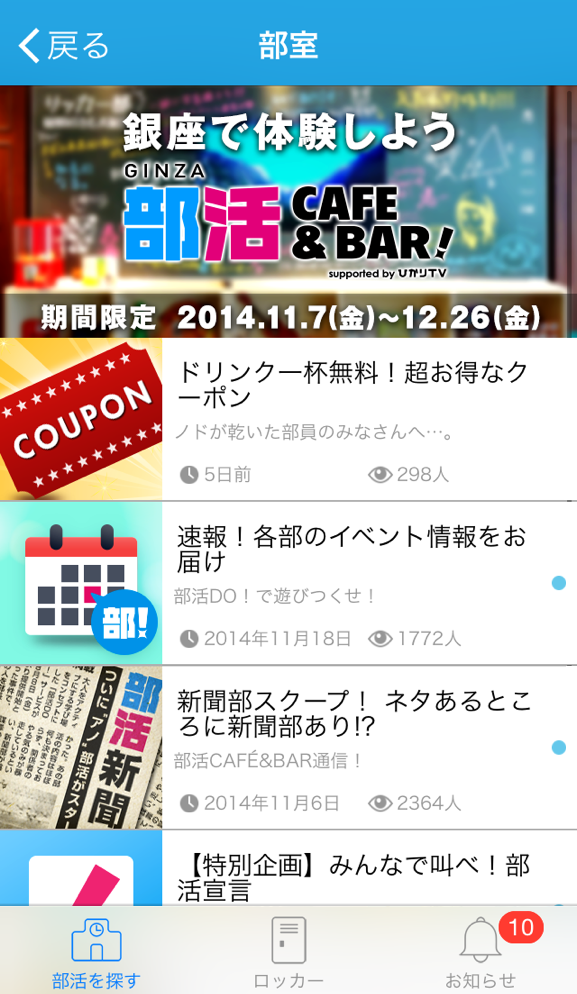
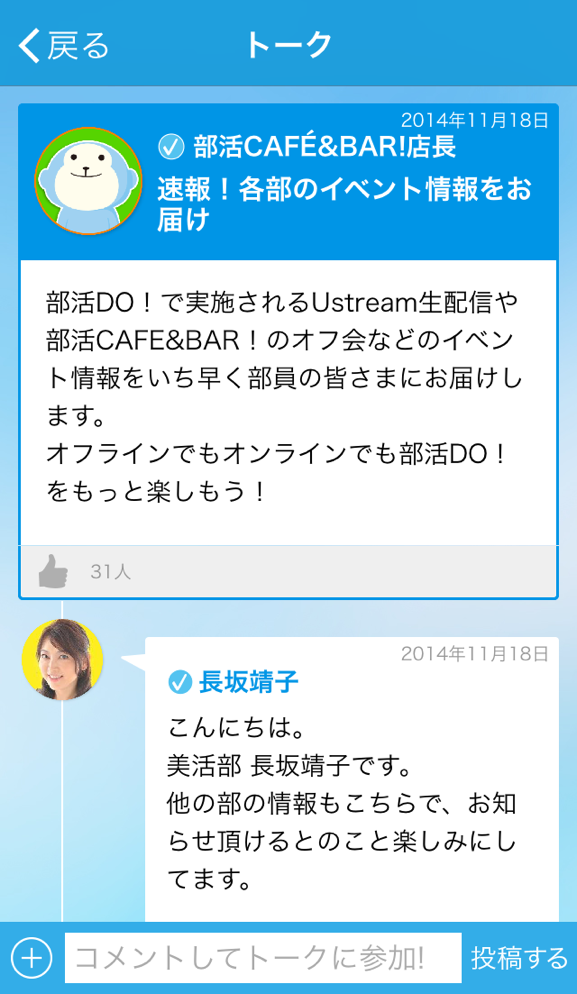

ひかりTV 部活DO！
- Category
- コミュニティアプリ
- Year
- 2015年
- Project
- アプリ内ページデザイン WEBサイト新規
- Part
- 画面設計 / UIデザイン / フロントエンド実装
- Tool
- Photoshop / Illustrator / Dreamweaver / HTML / CSS / Javascript
社会人向け部活コミュニティアプリのUIデザインを担当。 WEBサイト制作も担当。 投稿・イベント・チャット機能中心、約10画面の基本導線設計。




背景・課題
社会人の趣味・活動コミュニティ向けアプリとして新規開発。既存サービスが少なく、ユーザーが使いやすい導線と直感的なUI設計が求められた。
投稿、イベント、チャット機能の情報が混在しやすく、各画面で何をすべきかが明確に分かる設計が課題。
制作フロー
01
利用シーンの整理
主要な行動「トークルーム」「イベント参加」
「メンバーやり取り」を洗い出し。
02
画面設計（約10画面）
ホーム・部室・トークルーム・チャット画面の基本導線設計。
03
UIデザイン制作
統一デザインルール設定、
画面間で迷わないUI設計。
意識したこと
サービスカラーを軸にした統一設計
全体ベースをライトブルー基調、信頼感あるトーンで統一設計。
部活ごとのカラー展開
部活ごとにサブカラー設定、アイコン・ラベル・アクセントに反映。
情報整理と視線誘導
ホーム・部室・トークルームの情報を整理。迷わず行動できるUI設計。
成果
- 機能整理により、投稿閲覧からイベント参加まで導線明確化
- 落ち着いたデザインで安心して利用できるコミュニティ印象を表現
ふりかえり・改善点
機能が複数あるアプリでは、 情報整理と安心感のあるUI設計が重要だと実感しました。
今後はユーザーの利用シーンをより具体的に想定し、 さらに直感的な導線設計を追求していきたいと考えています。